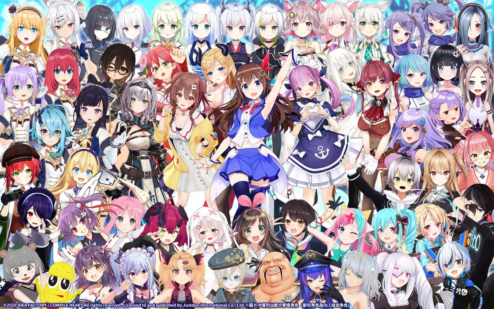
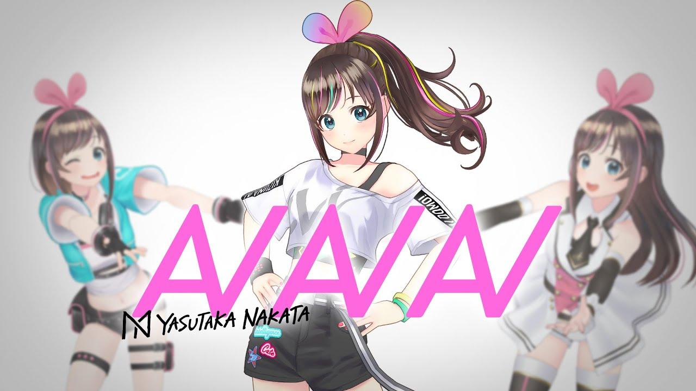
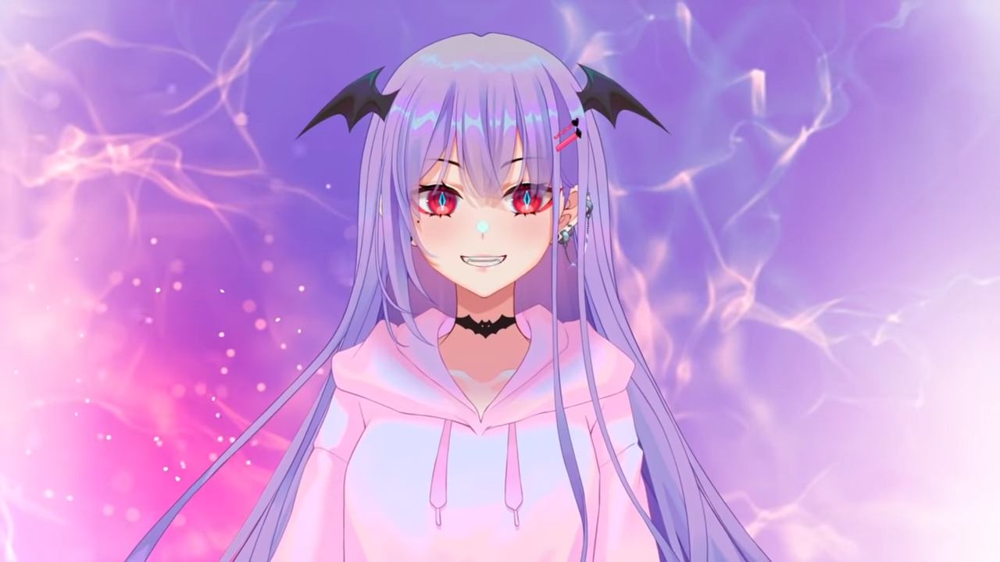

Fenomena VTuber yang sedang populer saat ini
Belakangan ini terjadi fenomena banyak orang yang menjadi VTuber. Mungkin untuk beberapa dari kalian, istilah VTuber masih
terdengar asing. Karena itu, di sini saya akan sedikit menjelaskan tentang trend VTuber ini. Sebenarnya apa itu
VTuber? Kenapa VTuber ini bisa populer ?
Apa itu VTuber?

VTuber merupakan istilah dari "Virtual Youtuber", yang di mana, seorang Youtuber yang melakukan streaming atau membuat konten
video di platform Youtube dengan menggunakan karakter avatar berupa 2D atau 3D. VTuber mulai populer pada tahun
2018 di Jepang dan salah satu VTuber yang terkenal yaitu Kizuna Ai. VTuber biasanya melakukan streaming dengan
konten bermain game, nyanyi/karaoke, menggambar, mengobrol dengan para viewer (atau biasa disebut
freetalk), dan banyak lainnya.
Model VTuber kebanyakan yang digunakan ialah Live 2D, yaitu karakter bentuk 2D tetapi bisa digerakkan. Karakter avatar VTuber
bisa bergerak dan bisa memiliki banyak ekspresi itu karena model dari avatar tersebut telah dimasukkan elemen
penggerak yang biasa disebut Rigging. Rigging sendiri dalam dunia VTuber/animasi ini memiliki arti yaitu cara
untuk memberikan struktur penggerak (tulang) pada karakter animasi.
Untuk menjadi VTuber cukup gampang, jika peralatan dan perangkat PC memiliki spesifikasi yang cukup tinggi maka sudah cukup
menjadi VTuber. Jika mempunyai PC atau laptop yang spesifikasinya sedang, masih bisa menjadi VTuber, tetapi mungkin
avatarnya bukan Live 2D, kalo dalam dunia VTuber, bisa dibilang avatarnya PNG lalu disebut sebagai VTuber PNG.
Tetapi ada juga yang orang yang memiliki avatar 3D. Karakter 3D bisa mengikuti mimik tubuh orang yang dibalik
VTuber tersebut dengan menggunakan teknologi VR.
Spesifikasi Yang Dibutuhkan Untuk Menjadi VTuber
Virtual Youtuber ini biasanya menggunakan teknologi tertentu seperti 3DCGI untuk mengubah dan membentuk avatar animasi yang
seolah-olah hidup dan mampu berinteraksi mulai dari mimik wajah, ekspresi , gerakan dan sebagainya dengan menggunakan
Motion Capture.
Untuk alat-alatnya, yang perlu dipersiapkan ialah PC dengan spesifikasi tinggi setidaknya dibutuhkan processor Intel i5 gen7
atau gen10, untuk AMD processornya Ryzen7. Lalu RAM minimal 16GB. VGA minimal NVidia GTX 1050 ti. Webcam & mic.
Motion capture, karena harga motion capture lumayan mahal, tidak apa tidak memakai motion capture. Dan gunakan
juga green screen agar gampang mengatur avatar VTuber.
VTuber Indie dan VTuber Agensi
Jadi, jika ingin menjadi seorang VTuber bisa melalui dua jalur, yaitu sebagai VTuber Indie atau masuk ke dalam agensi VTuber.
VTuber Indie adalah seorang Virtual Youtuber yang mempersiapkan diri sebagai VTuber seorang diri, mulai dari
peralatan & PC/laptop, hingga membuat avatar original dengan cara commission ke orang lain atau buat sendiri.
Sedangkan jika bergabung ke sebuah agensi VTuber. Jika masih belum ada modal untuk peralatannya, maka agensi
tersebut akan meminjamkan dana hingga Talent/VTuber tersebut sudah bisa membeli peralatan & perangkat yang lebih
mumpuni.
Saat ini sudah banyak orang yang debut sebagai VTuber, baik itu Indie atau bergabung ke agensi. Untuk perkembangan VTuber
Indie dengan yang bernaung ke sebuah agensi cukup memiliki perbedaan, VTuber yang tergabung ke dalam agensi,
terutama agensi VTuber yang sudah cukup terkenal, sudah banyak yang diikuti/disubscribe banyak orang dibandingkan
dengan VTuber Indie. Tetapi ada juga VTuber Indie yang memiliki subsciber yang bisa menyaingi VTuber agensi,
walau tidak banyak.
Agensi VTuber yang terkenal saat ini ialah Hololive dan Nijisanji. Kedua agensi tersebut berpusat di Jepang. Mereka telah
memiliki banyak talent VTuber yang mereka bawa. Bahkan agensi-agensi tersebut telah membuka cabang mereka ke
luar Jepang, salah satunya Indonesia. Ada juga agensi VTuber asli dari Indonesia, salah satunya Maha5 (Maha Panca).
Mereka juga sudah membuka cabang ke Jepang sebagai Maha5JP.
Berikut VTuber yang cukup terkenal
Kizuna Ai

Kizuna Ai adalah Konten kreator/streamer yang pertama kali menggambarkan dirinya sebagai "Virtual Youtuber", hingga populer
dengan istilah VTuber sampai saat ini. Kizuna Ai pertama kali debut pada tanggal 29 November 2016. Kizuna Ai
didesain oleh Mori Kuraki, pemodelan dilakukan oleh Tda, dan untuk model 3D dibuat oleh Tomitake. Kizuna Ai memiliki
2 channel youtube, yang utama adalah A. I. Channel yang dituju untuk entertain dan cover/original lagu. Channel
kedua Kizuna Ai ialah A. I. Games yang ditujukan untuk streaming bermain game. Saat ini, jumlah pengikut Kizuna
Ai di youtube sebanyak 3,06 juta subscriber di A.I.Channel dan A.I.Games sebanyak 1,51 juta subsciber. Tetapi
pada tanggal 26 Februari 2022, Kizuna Ai mengumumkan bahwa dirinya akan hiatus sampai waktu yang tidak ditentukan
dan mempersembahkan 1 event sebelum ia hiatus, yaitu Hello World 2022 Kizuna Ai The Last Live.
Shirakami Fubuki

Shirakami Fubuki adalah salah satu streamer dari Hololive JP(Japan) juga sebagai salah satu yang menjadi tonggak awal VTuber
dengan pencapaian 1 juta subscriber pertama dari Hololive JP dan gen 1 dari HoloJP serta salah satu anggota dari
HoloGamer. Fubuki terkenal akan clip friendzonenya dan juga sifatnya yang caring but sometime very chaotic.
Gawr Gura
Gawr gura adalah gen 1 dari Hololive EN atau juga disebut HoloMyth bersama member lain seperti Mori Calliope, Takanashi Kiara,
Ninomae Ina'nis dan Watson Amelia. Gura lebih sering stream dengan fokus kepada viewers NA dan EU. Pembawaan
stream Gura lebih ke kalem dan humble dalam arah memainkan setiap tipe permainan yang dia lakukan di stream serta
dia merilis beberapa lagu original.
Andi Adinata

Andi Adinata adalah VTuber laki-laki yang berasal dari Maha5 (MahaPanca) yang menjadi salah satu pelopor VTuber laki-laki
di Indonesia dengan pencapaian 100k subscriber. Andi memiliki kepribadian yang humoris dan sangat percaya diri.
Dia sangat percaya diri akan ketampanannya, walau tetap jomb... single. Andi menjadi salah satu motivator bagi
VTuber yang baru untuk debut. Salah satu hobi Andi ialah bernyanyi. Andi memiliki suara yang sangat bagus. Banyak
viewernya yang suka dengan cover lagu Andi bawakan.
Mythia Batford

Mythia Batford atau biasa disapa Miti adalah vampire idol yang imut. Miti awalnya masuk dalam sebuah afiliansi/agensi, ShiroUma
dan debut pada 1 Desember 2020. Tetapi karena suatu hal, Miti memutuskan keluar dari ShiroUma dan menjadi VTuber
Indie. Miti menamai viewernya sebagai Simpthia. Miti memiliki hobi yang banyak, salah satunya bernyanyi. Walaupun
Miti sekarang menjadi VTuber Indie, tetapi perkembangan Miti (Channel youtube) tidak kalah dengan VTuber yang
bernaung dalam sebuah agensi. Ketika Miti mengeluarkan model avatar 2.0 nya, dalam waktu singkat, subscriber
Miti melonjak pesat yang menjadikan Miti salah satu VTuber Indie yang berkembang sangat cepat dalam waktu singkat.